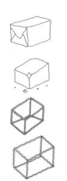

SCIENCEGROUND 1.5 – Microbes
The program of Scienceground 1.5 @Festivaletteratura 2019, Mantova 4-8 September. All the references are to the program of the festival, which can be downloaded at www.festivaletteratura.it.
Drawings by Andrea De Franco

A COMMON GROUND FOR EXCHANGING IDEAS ON THE SCIENTIFIC WORLD
Organized by Piccola Comunità Scientifica ExTemporanea
«When you try to observe microbes or viruses, you end up finding links that are part of what people call “society”. They are two sides of the same coin. This is why it is not necessary to get out of science to explain its social aspects. We need to enter into the various disciplines – and then it will be the connections between the scientific objects themselves to define society, for you and us.»
Bruno Latour, interview at Scienceground 2, 2018
If we had to rebuild Palazzo Te now and decide the subjects to depict, how would we fresco the walls? We could certainly dedicate one room to the microorganisms that populate our environment and bodies – even larger in number than our own cells! So, just as the rooms of Palazzo Te are dedicated to giants, emblems and metamorphoses, the Isabella d’Este high school will host THE BACTERIA HALL, THE MOULD ROOM, THE YEAST ATRIUM AND THE VIRUS CLOISTER.
For the entire duration of the festival ExTemporanea will be using microscopes and books, culture media and voice recorders to fertilize the terrain for scientific comparison. What fruits are we expecting? Critical and shared tools that will help to unravel a tangle of clichés and
over-simplifications and to reveal the close relationship between scientific progress – with its methods, myths and controversies – and the social context in which science moves.
Each day will start with a discussion by the reading groups, in their search for traces of microbiology in literature (PAGG. 24, 45, 68, 123). The laboratories will bring us closer to the microorganisms that populate the world outside and inside us (EV. 1, 20, 29, 42, 83, 138, 157, 199), but the instruments to “sense” them will be available in a permanent exhibition. Researchers of international status will discuss their knowledge on the issues of antibiotic resistance, access to scientific literature, microbe anthropology, and more (PAGG. 11, 23, 43, 65). At the end of the day, mingling with the authors at the Festival will provide an opportunity for greater insight into scientific topics of social relevance (PAGG. 15, 34, 56, 111, 129).
Above all, Scienceground is an open space in which to exchange sourdough and specialist articles, kefir granules and reading tips. The ExTemporanea community behind it is made up of students, researchers and enthusiasts, on hand to help participants get themselves some bacterial culture while making a scientific culture.
For the latest information see www.festivaletteratura.it and scienceground.it
With a daily 2 Euros ticket, you can participate in all the Scienceground activities, apart from the numbered workshops.

Wednesday 4th September
15.00 > 20.00 “ISABELLA D’ESTE” HIGH SCHOOL daily ticket € 2,00
SCIENCEGROUND 1.5 – MICROBES
We eat them, but we don’t know what they taste like. We touch them, but we can’t see them. They are an essential part of our body but we are hardly aware of it. How do we perceive them then? And what do we make of them? Scienceground will give us the opportunity to narrow the gap between our world and the world of microbes: listening to them, observing them under a microscope, exchanging bread yeasts and getting some reading tips for scientific articles. Access to the exhibition is included in the daily ticket for Scienceground.
15.00 “ISABELLA D’ESTE” HIGH SCHOOL € 8,00
ExTemporanea
HOW SMALL IS THE WORLD! (AND HOW TO OBSERVE IT)
Microscopic cooking workshop
from 5 to 10 years
They say that the bacteriologist Robert Koch came up with the idea of growing
bacteria on agar by looking at his wife preparing the jam jelly. The kitchen is not the only place where instruments of scientific observation can be developed: in this workshop, we will become acquainted with some laboratory instruments to study the eating habits of microbes.
18.00 “ISABELLA D’ESTE” HIGH SCHOOL daily ticket € 2,00
ExTemporanea with Biblioteca d’Area di Bologna del CNR
ZEROUNIZZAZIONE
Contaminazioni
Scientists communicate through a form of literature: scientific papers, monographies, specialistic forums, popular books. But how do we read a scientific paper? And where can we find it? As in the past we became literate to keep up with the changes of the society, the time is now ripe for us to become “zerunizzati”.
ExTemporanea contaminates its activities by inviting the Festival participants from different backgrounds to discuss themes of scientific and social interest. On the Festival website and on scienceground.it the names of the participants will be updated. Access to the contaminazioni is included in the daily ticket for Scienceground.
21:00 PIAZZA MANTEGNA free entry
ExTemporanea and Biblioteca d’Area di Bologna del CNR
A SIGNAL IN THE NOISE
Blackboards – Scienceground 1.5
The production, communication and interpretation of scientific results happen under enormous pressures, often involuntary. Last year we closed the Festival talking about statistical distortions: we restart the train of thought from the theme of the access to scientific literature.

Thursday 5th September
20
9.30 “ISABELLA D’ESTE” HIGH SCHOOL € 8,00
ExTemporanea with Cinzia Manicardi and Marco Bartoli
MICROORGANISMS AROUND US – THE WATERS OF THE RIO
Laboratory of environmental research
From age 14
In 2003 the Ig Nobel prize went to a researcher which disproved the rule that food fallen on the ground should not get contaminated for at least five seconds. The water, the soil and the air are full of microorganisms. With the help of the students from some schools in Mantova we will try to understand which microbes populate the water and the soil around us. In this first event we will plan an environmental study trying to understand which environmental microbes we will look for, and then we will go on the Rio of Mantova to collect samples, perform filtrations, and collect data with a multiparametric probe.
Laboratory in three sessions (events 20, 83, 138). Sessions are independent, but the participation to the entire cycle is recommended (cumulative ticket € 18,00). The duration of this first session is roughly 3h30′. In collaboration with the Fondazione Le Pescherie di Giulio Romano and Labter-Crea Rete di Scuole. For more informations scienceground@festivaletteratura.it
10.00 “ISABELLA D’ESTE” HIGH SCHOOL daily ticket € 2,00
READING GROUP
Semmelweis by L. F. Céline
ExTemporanea
What would you think of a physician playing the maracas as a sanitary practice before visiting you? Well, probably the same things which nearly two centuries ago were popping in the head of patients and colleagues of Ignác Fülöp Semmelweis in the maternity was of the hospital in Vienna. What strange thing was he doing? He stubbornly kept washing his hands before entering the delivery room! We will retrace the observations and thoughts which led to the discovery of microbes through a story which is tragic but also exemplary of the complexity characterizing scientific progress. Ahead of the Festival, Extemporanea proposes a series of books and scientific papers to prepare an informed discussion, which every day will find a moment of discussion open to everyone in the space of Scienceground.
More information and updated material at the page http://scienceground.it/category/bookclub, where it is possible to share the first impressions. Access to the reading groups is included in the daily ticket for Scienceground.
29
11.00 “ISABELLA D’ESTE” HIGH SCHOOL € 8,00
ExTemporanea
HOW SMALL IS THE WORLD! (AND HOW TO OBSERVE IT) (SEE 1)
Microscopic cooking workshop
from 5 to 10 years
42
16.00 “ISABELLA D’ESTE” HIGH SCHOOL € 8,00
Marco Gobetti and Stefano Tonini
ONCE UPON A TIME THE BREAD OF THE FUTURE
Laboratory of yeasts and fermentations
From age 16
Why putting bread in water is not enough to make beer? And is the milk forgotten in the fridge yogurt? Marco Gobbetti, professor at the University of Bolzano, and the master student Stefano Tonini, passionate about fermentations, will reveal some of the secrets of the microbes living in a stable symbiosis inside the natural yeast, and that allow us to make tasty and nutritious products. By putting the hands in the dough…
17.30 “ISABELLA D’ESTE” HIGH SCHOOL daily ticket € 2,00
ExTemporanea with Mattia Galeotti
MICROBES & BIG DATA
How to study the flu using Wikipedia statistics
Contaminazioni
The science studying outbreaks is changing, also thanks to machine learning algorithms. More in general, informatics and microbes contaminate each other in many other ways: viruses infecting computers, algorithms to better comprehend microbes.

Friday 6th September
10.00 “ISABELLA D’ESTE” HIGH SCHOOL daily ticket € 2,00
READING GROUP
Spillover by David Quammen
ExTemporanea
The term “spillover” indicates the precise moment during which a pathogen, a virus or a bacterium, makes the evolutionary jump from one species to another. It is an event well placed in time: a combination between chance and opportunity. Through the expert pen of David Quammen we will follow the traces of these primordial events in the forests of Cameroon and the markets of southern Cina, the temples of the monkeys of Bangladesh and the prairies of Australia, coming firstly to terms with ourselves since the history of pandemics speaks about us more than we could imagine.
83
11.00 “ISABELLA D’ESTE” HIGH SCHOOL € 8,00
ExTemporanea with Cinzia Manicardi and Marco Bartoli
MICROORGANISMS AROUND US – THE WATERS OF THE RIO
Laboratory of environmental research
From age 14
The environment around us is full of microbes. After having collected the water from the Rio of Mantova and incubated the microbes, we can now see what has been growing overnight and interpret the first results.
18.00 “ISABELLA D’ESTE” HIGH SCHOOL € 2,00
Telmo Pievani with ExTemporanea
MICROBES AND EVOLUTION
Contaminazioni
Even if its conceptual pillars are still solid, the theory of evolution of Darwin has undergone and still undergoes continuous changes under the light of the latest and more advanced discoveries in the various fields of biology.

Saturday 7th September
10.00 “ISABELLA D’ESTE” HIGH SCHOOL daily ticket € 2,00
READING GROUP
Microbes and Other Shamanic Beings by C. Giraldo Herrera
ExTemporanea
Since the time of the “contact”– when the first missionaries met the natives after the “discovery” of the Americas – people from the West have used different paradigms to analyse the complex relationship between the autochtonous populations and nature: religion, psychoanalysis, anthropology. What can the concept of microbiome tell us, and how can we use this knowledge to understand the way we conceive the relationship with nature?
11:00 PIAZZA MANTEGNA free entry
Angelo Pan
PREVENTING INFECTIONS RESISTANT TO ANTIBIOTICS
Blackboards – Scienceground 1.5
Medicine as we know it could be in grave danger due to the development of microbes resistant to multiple drugs. In order to protect it, a correct use of antibiotics and the establishment of specific services to monitor the critical issues are needed.
138
11.00 “ISABELLA D’ESTE” HIGH SCHOOL € 8,00
ExTemporanea with Cinzia Manicardi and Marco Bartoli
MICROORGANISMS AROUND US – THE WATERS OF THE RIO
Laboratory of environmental research
From age 14
The environment around us if full of microogranisms. Yesterday we analysed the water of the Rio of Mantova and we reached some conclusions. In order to build a scientific community, data and results must be shared! Amongt the formats scientists use to communicate there are posters, scientific papers…For general informations on the laboratory see 20.
155
16:00 UNIVERSITY AULA MAGNA € 6,00
Sally C. Davies with Angelo Pan
IS WESTERN MEDICINE COMING TO AN END?
When the highest medical authority warns that medicines no longer work, it’s time to prick up our ears. What has changed since the discovery of penicillin in the 20th century and the medical revolution that came with it? The results of the investigation by Sally C. Davies – the first woman to hold the post of Chief Medical Officer for England and author of The Drugs Don’t Work – speak for themselves: microbes counterattack, and the more we abuse anti-microbial drugs the more resistant they become to them. This is already a real global threat on a par with climate change, and it affects the daily life of those who unfortunately suffer from multi-resistant infections, often right inside the hospitals. She will be speaking to Angelo Pan, director of the Infectious Diseases Department at Cremona Hospital. The author will speak in English. Consecutive interpretation into Italian
157
16.00 “ISABELLA D’ESTE” HIGH SCHOOL € 8,00
Barbara Zambelli with ExTemporanea
MICROBIAL WORKERS: WHEN MICROORGANISMS GO TO THE FACTORY
Laboratory of biotechnology
From age 16
During the second half of the 19th century, with the industrial revolution, we discovered workers also in the microbial world. Pasteur’s studies on the fermentation processes used for millennia open the doors to the manipulation of genes and enzymes: modern biotechnology is born. In this laboratory you will see that bacteria too have assembly lines, and how we can use them for various applications, not without the risk of creating social conflicts. Or, better, microbial conflicts.
10.00 “ISABELLA D’ESTE” HIGH SCHOOL daily ticket € 2,00
Gianfranco Pacchioni with ExTemporanea
THE INFLATION OF SCIENTIFIC TRUTH
Contaminazioni
While the production of scientific papers now reaches unsustainable numbers, the big publishers are pushing the international organizations to promote a new model for publishing the specialized literature. But is the open access really open?
21:00 PIAZZA MANTEGNA free entry
Maria Paola Landini
ANTIBIOTIC RESISTANCE: STRUCTURING HEALTHCARE
Blackboards – Scienceground 1.5
Western medicine could be at risk due to the development of multidrug-resistant microbes. How are hospitals organizing themselves to face this serious issue? And how can they help the citizens?

Sunday 8th September
10.00 “ISABELLA D’ESTE” HIGH SCHOOL daily ticket € 2,00
READING GROUP
The drugs don’t work by Sally C. Davies
ExTemporanea
Mrs Xu is taken to hospital after catching a sore throat at her son’s birthday party. She doesn’t know if she will ever get out and see her family again. Mrs Xu is not a fictional character: we could all be like her in 30 years, when there won’t be effective antibiotics to treat also the most common infections. Resistance to antibiotics is becoming a very serious issue, also in our hospitals. But it is not too late yet. Sally C. Davies, Chief Medical Officer of England, outlines in her book some strategies to enforce starting now, in research and daily practice, to tackle the problem.
11:00 PIAZZA MANTEGNA free entry
Lynn Chiu
MICROBES: GOOD AND/OR EVIL
Blackboards – Scienceground 1.5
Just a few years ago microbes were feared in the public discourse (you better wash your hands for thirty seconds!), but infections were reasonably under control. Now everybody likes them (you better eat probiotic yogurt to enhance your gut microbiome!), but multiresistant strands threaten Western medicine as we know it. The event will be in English without interpretation in Italian.
14.30 “ISABELLA D’ESTE” HIGH SCHOOL daily ticket € 2,00
ExTemporanea
CLOSING MEETING OF SCIENCEGROUND
Contaminazioni
“When I started studying scientists I have been accused to criticize them because I was describing how they work, and this was viewed as a criticism. But now after 40 years this is the only way to defend science”. These are some of the words with which, one year ago, Bruno Latour contributed to the closing meeting of Scienceground. With open doors, we discuss how Scienceground 1.5 did in this latest edition and we launch some ideas for the realization of
Scienceground 1.6666666…
219
17:00 SEMINARIO VESCOVILE € 6,00
César E. Giraldo Herrera with Paulo Fernando Lévan
MICROBES, NOT SPIRITS
“These entities are related to the disease, they are pathogenic. They require nourishment, they grow, mature, and age; reproduce themselves prolifically”. Seemingly the perfect description of microbes, whose deadly presence was first perceived in hospitals besieged by a fever that in the first decades of the nineteenth century wiped out countless new mothers and which later evolved into visible germs, thanks to Louis Pasteur and the microscope. And yet it is a description of the complex system of sensory experiences that the shamans of the Amerindian cultures associate with their medical practices, and which have hitherto been translated as “spirits”. Anthropologist and biologist César E. Giraldo Herrera, associate researcher at the University of Oxford, challenges animistic interpretations, which at best allowed “spirits” to be sophisticated psychoanalytic constructions, arguing that a better translation in the Western vocabulary, respectful of the empiricism that characterises the close relationship with the nature of the Amazon populations, is that of “microbes”. He talks to philosopher Paulo Fernando-Lévano, researcher and spokesperson for the small ExTemporanea scientific community. The author will speak in English. Consecutive interpretation into Italian.

Comments